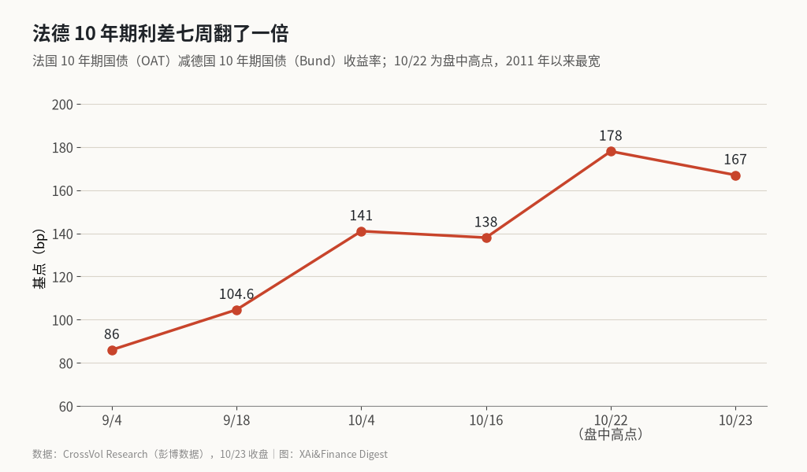
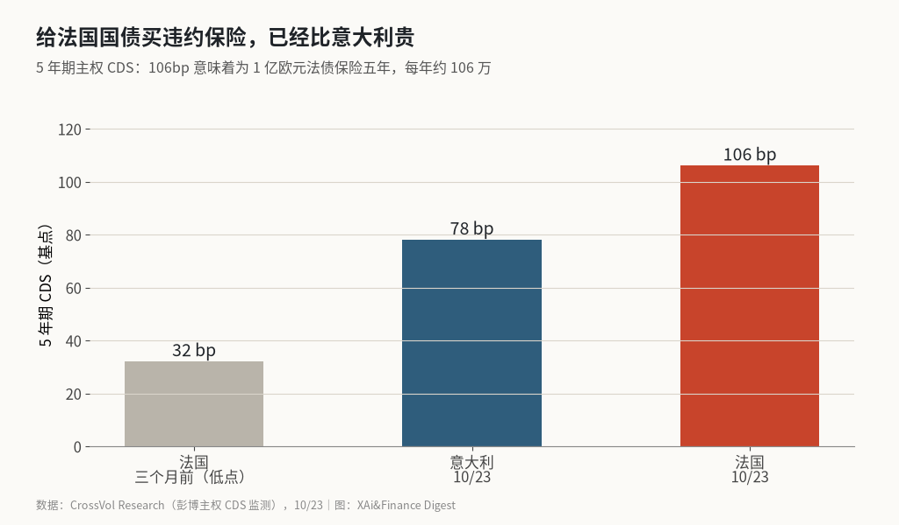

法国借钱比意大利还贵：10 年期国债破 5%，涨的主要是法国自己的那一截
三个月里法国 10 年期收益率涨了 105 个基点，德国只涨了 17 个。多出来的约 88 个基点是市场给法国单独开的价，而且这次先涨的是 2 年期。
这里算的是一个差额：过去三个月法国 10 年期国债收益率涨了多少，同期德国涨了多少，两者相减，剩下的就是只属于法国的风险溢价。按 CrossVol Research 引彭博的数据，法国涨了 105 个基点，德国涨了 17 个，差额约 88 个基点，是我减出来的。连德国都躲不开的那部分利率上行，只占法国涨幅的六分之一左右，其余是法国自己的问题。到 10 月 23 日收盘，法国借 10 年期的钱比意大利贵 45 个基点，比希腊贵 64 个基点。
我的判断是：这轮抛售的主因是政治，财政数字这一周并没有变化。证据在 2 年期国债上。
七周里利差怎么走，曲线见图

OAT 是法国国债，Bund 是德国国债。两者 10 年期收益率之差，就是投资者为持有法国风险多要的补偿。9 月 4 日这个利差是 86 个基点，9 月 18 日 104.6，10 月 4 日 141。10 月 22 日盘中最高到 178 个基点，是 2011 年欧债危机以来最宽；23 日收在 167。
单看最后一周，利差从 138 扩大到 167，涨了 29 个基点。彭博说，这是 1990 年有记录以来第二大的单周扩大。
收益率本身也破了纪录。CNBC 报道，10 月 21 日法国 10 年期收益率盘中站上 5%，2002 年以来第一次。《卫报》的数字是 22 日早盘到 5.089%，同时法国 10 年期借款成本 2013 年以来第一次高过美国。@yardeni 在 X 上的说法是：法国 10 年期收益率超过了美国，意大利现在借钱比法国便宜。
先涨的是 2 年期
一个国家的长期债务前景让人担心时，通常是长端先跌，投资者要为锁定几十年的钱多拿补偿。法国这周反过来了。CrossVol 的数据是：2 年期收益率涨了 22 个基点，到 3.80%，10 年期涨 21 个基点，30 年期只涨 11 个。同期德国 2 年期还跌了 5 个基点。法德 2 年期利差五个交易日从 47 扩大到 74。
2 年期国债在任何财政整顿计划见效之前就到期了。卖它的人押的是接下来一年半：一份没有议会多数的预算、六个月后的总统大选，还有街头。这是政治风险，跟财政账本关系不大。
说白了，市场在给“接下来十八个月会出什么事”定价，“法国二十年后还不还得起”反倒是次要的。
街头成了市场变量
这一周债市跟着街头走，街头成了市场变量。10 月 17 日到 18 日那个周末，按彭博的说法有超过 50 万人上街，约 3,000 家商店被抢，2,700 人被捕。10 月 24 日又是一轮：法国内政部统计 41 万人参加、1,314 人被拘留、53 名执法人员受伤，@RFI_Cn 和 CrossVol 给的数字一致。@dw_chinese 转述内政部长的话，抢劫和暴力活动比前一周明显减少；@bbcchinese 的说法是当局暂时避免了重演上周的大规模暴乱。
接下来的日程不轻松。“黄背心”宣布 10 月 30 日在国民议会前“敲锅”抗议，以 CGT 为首的工会号召 11 月 5 日起全国大罢工，覆盖交通、学校和医院。
选举那条线也在动。@C_Barraud 汇总的博彩市场显示，勒庞仍是热门，但 Trappes 枪击事件后势头在减弱；Lisnard 拉开了与梅朗雄的距离，正在追近菲利普。离大选还有大约六个月。
保险价格已经比意大利贵

CDS 是针对违约的保险合约。法国 5 年期 CDS 在 10 月 23 日是 106 个基点，相当于给 1 亿欧元法债保险五年，每年付约 106 万。三个月前最低只有 32 个基点。意大利是 78。
我第一次看到这组数时愣了一下。十五年前欧债危机，付高价的是希腊、意大利、西班牙、葡萄牙，法国坐在德国旁边。这一周顺序倒了过来。
财政账本本身也不好看。《卫报》引的数字是，法国 2025 年赤字占 GDP 的 5.1%，债务占 115.6%。CrossVol 的数据是今年赤字 5.4%，偿债成本到 2027 年将升到 GDP 的约 2.9%，2020 年约 1.3%。这些数字是慢变量，这一周没有新的坏消息，利差却走出了 1990 年以来第二大的单周扩大。所以我把这周的涨幅主要算在政治头上。
穆迪没降级，欧洲央行暂时不救
10 月 23 日晚，穆迪维持法国 Aa3 评级、展望负面，比标普和惠誉高一档。市场原本多数预期会降级。穆迪的声明写得很直白：收益率上升得比预期快，大范围的社会抗议可能限制财政整顿；它的基准假设是 2027 年减赤预算“最终会通过，可能以法令方式”。
能托底的只有欧洲央行。它的传导保护工具（TPI）可以在利差“无序且不符合基本面”时买入一国国债，没有预设上限。问题是法国自 2024 年 7 月起就处在欧盟超额赤字程序里，很难说它的利差“不符合基本面”。CrossVol 引前欧洲央行行长德拉吉的说法，对法国的干预“仍是遥远的事”。欧洲央行 10 月 29 日开会，ING 的 Carsten Brzeski 对《卫报》说，欧洲央行下周大概率按兵不动。
传染已经开始。德意志银行的 Jim Reid 说，意大利对德国的 10 年期利差扩大到 116 个基点，西班牙 66 个基点，是 2025 年 6 月以来最宽。
政治溢价何时见顶，利差和罢工先给答案
归结起来，法国这一截溢价，是市场在为接下来十八个月的政治局面收费。穆迪没降级给了一口气，欧洲央行暂时不救、传染已经开始，则是摆在眼前的风险。
法德 2 年期利差是第一个信号，现在 74 个基点。如果它继续扩大而 10 年期利差稳住，说明市场押的还是未来一年半的政治风险。
第二个是 10 年期利差的两个整数关口。收盘站上 180 个基点，下一站是 200，那时欧洲央行干预的讨论会躲不开。回到 150 以下，说明政治溢价在消退。
第三个是 11 月 5 日大罢工。上周五利差收窄 7 个基点，是 10 月 6 日以来最大的单日收窄，可在没有新买家进场之前，这种反弹还算不上转折。
如果欧洲央行 10 月 29 日对 TPI 的适用条件给出明确说法，而 2 年期利差回到 60 个基点以下，政治溢价见顶才算有了证据。
X 上怎么看
结论 · 偏空共识：2 位看多，5 位看空，3 位中性/分歧。看空的人盯利差和 CDS，偏乐观的声音只来自示威烈度比上周下降。
▲ 看多2 位
▼ 看空5 位
法国债务占 GDP 已升至 119%、赤字 5.4%，德法利差扩大到 174 个基点；真正的威胁是国债危机转化为银行危机。
观点为 X 用户当日公开帖子的中文摘要，忠于原文但有删减；标「未核实」的为预测、个人推测或单一来源说法。立场为人工判断。
数据来源
- 利差、2 年期、CDS、股指和抗议统计以 CrossVol 整理的彭博数据为准；X 上有帖子写“盘中 5.14%”“利差 174/180 个基点”，取值时点不同，正文未采用。
- 赤字有两个口径：《卫报》写的是 2025 年 5.1%，CrossVol 写的是今年 5.4%，两者年份不同。
- 88 个基点为作者用法国 105 个基点减德国 17 个基点得出，只是粗略拆分。
- https://newsletter.crossvolresearch.com/p/france-bond-crisis-oat-bund-spread-october-2026
- https://www.cnbc.com/2026/10/21/france-protests-bonds-debt.html
- https://www.theguardian.com/world/2026/oct/22/french-borrowing-costs-overtake-us-amid-budget-turmoil
- https://www.investing.com/news/economy-news/french-10year-bond-yields-hit-5-highest-since-2002-4962104
- https://x.com/C_Barraud/status/2114285941007225279
- https://x.com/C_Barraud/status/2114276611033891242
- https://x.com/yardeni/status/2114382849994285491
- https://x.com/RFI_Cn/status/2114372901956878597
- https://x.com/dw_chinese/status/2114338644702171208
- https://x.com/bbcchinese/status/2114197777966068111